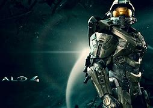

Historia de los Juegos de Halo
La saga de Halo ha sido una de las más influyentes en la historia de los videojuegos. A continuación, te presentamos los títulos más importantes de la saga, junto con sus fechas de lanzamiento, desarrolladores y curiosidades.
🎮 Halo Wars (2531)
Halo Wars es un juego de estrategia en tiempo real ambientado en el universo de Halo, donde los jugadores lideran las fuerzas humanas contra el Covenant durante los primeros días del conflicto.

Fecha de lanzamiento: 26 de febrero de 2009
Desarrollador: Ensemble Studios
Plataformas: Xbox 360, PC
Curiosidad: Fue el primer juego de Halo en adoptar el formato de estrategia en tiempo real.
🎮 Halo: Reach (2552)
Halo: Reach narra la caída del planeta Reach y la última misión de los Spartans en su lucha contra el Covenant.
Fecha de lanzamiento: 14 de septiembre de 2010
Desarrollador: Bungie
Plataformas: Xbox 360, PC
Curiosidad: Fue el último juego desarrollado por Bungie antes de que 343 Industries tomara el control de la saga.
🎮 Halo: Combat Evolved (2552)
Halo: Combat Evolved es el primer juego de la saga que inicia la historia del Jefe Maestro y Cortana, quienes deben detener la amenaza del Covenant y los Flood en el anillo Halo.

Fecha de lanzamiento: 15 de noviembre de 2001
Desarrollador: Bungie
Plataformas: Xbox, PC
Curiosidad: Halo revolucionó los juegos de disparos en consola, estableciendo un nuevo estándar en los FPS.
🎮 Halo 2 (2552)
Halo 2 expande la historia del Jefe Maestro, quien debe enfrentarse a nuevas amenazas mientras el Covenant planea destruir la humanidad.

Fecha de lanzamiento: 9 de noviembre de 2004
Desarrollador: Bungie
Plataformas: Xbox
Curiosidad: Fue el primer juego de la saga en introducir un multijugador en línea a través de Xbox Live.
🎮 Halo 3 (2552)
Halo 3 cierra la trilogía original y la lucha final del Jefe Maestro contra el Covenant y los Flood.

Fecha de lanzamiento: 25 de septiembre de 2007
Desarrollador: Bungie
Plataformas: Xbox 360
Curiosidad: El multijugador de Halo 3 fue un hito, influyendo enormemente en el desarrollo de juegos en línea en consolas.
🎮 Halo 4 (2557)
Halo 4 es el inicio de una nueva trilogía donde el Jefe Maestro debe enfrentarse a los Prometeos, una nueva amenaza alienígena.
Fecha de lanzamiento: 6 de noviembre de 2012
Desarrollador: 343 Industries
Plataformas: Xbox 360
Curiosidad: Introdujo a nuevos enemigos, como los Prometeos, y profundizó en la relación entre el Jefe Maestro y Cortana.
🎮 Halo 5: Guardians (2558)
Halo 5 sigue la historia del Jefe Maestro y Cortana, quienes se enfrentan en una lucha por el control de la galaxia.

Fecha de lanzamiento: 27 de octubre de 2015
Desarrollador: 343 Industries
Plataformas: Xbox One
Curiosidad: Introdujo nuevas mecánicas de movimiento y un modo multijugador más dinámico.